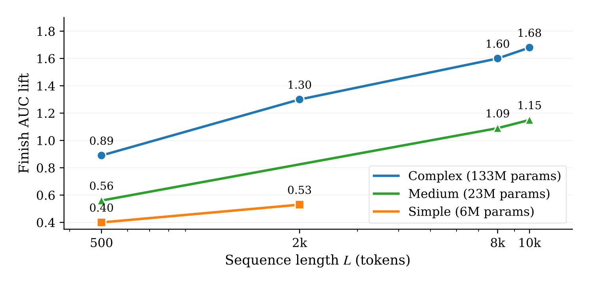
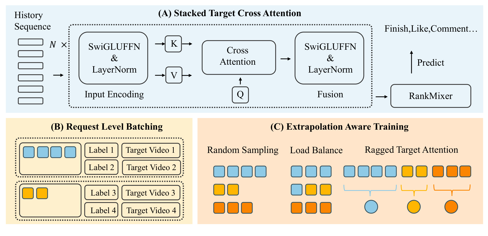
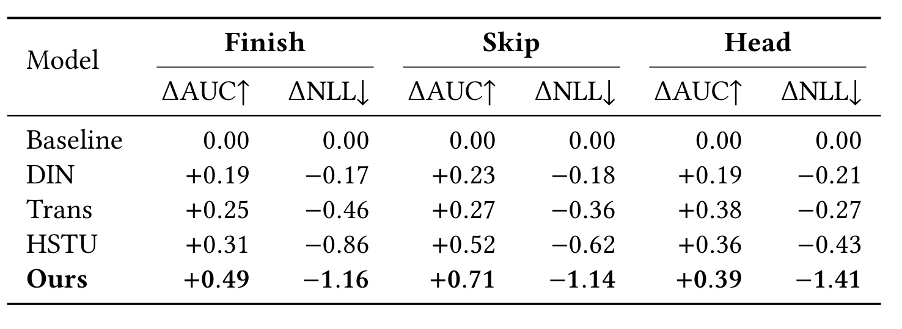
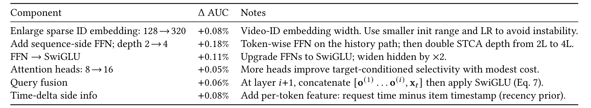
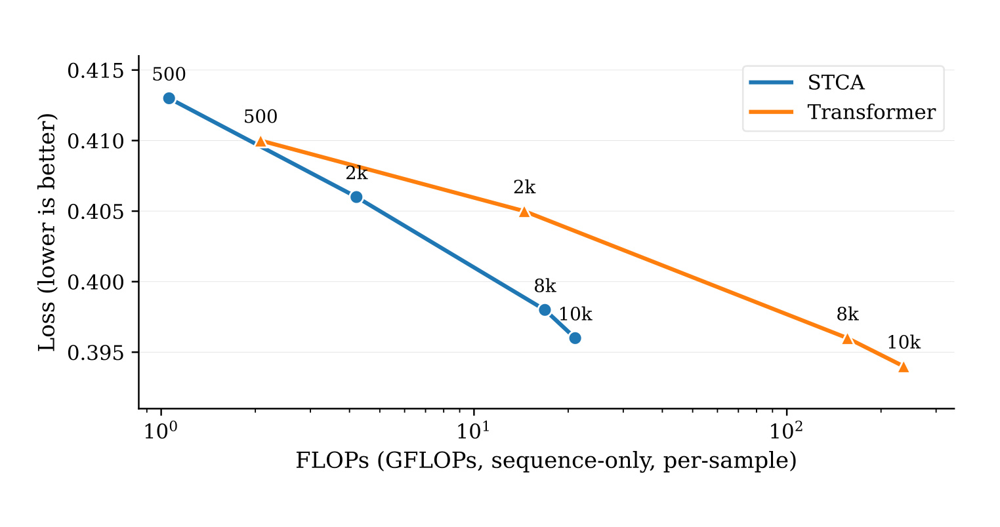
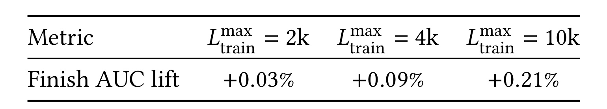
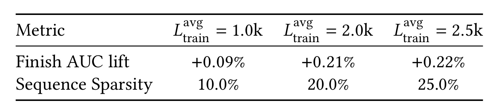
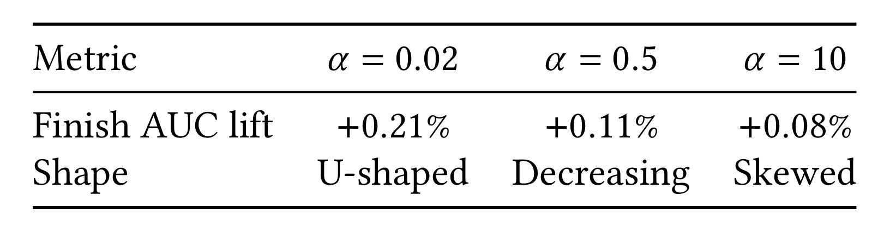
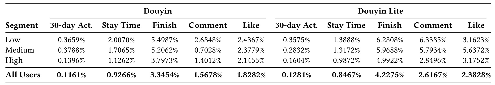

字节跳动-STCA：抖音 10k 长序列端到端建模的架构、系统与外推三件套
这是字节跳动推荐团队发表在 WWW '26 的工业系统论文，第一作者 Lin Guan 来自字节跳动，通讯作者为 Qiwei Chen，全部十五位作者均署名 ByteDance，论文入口为 arXiv:2511.06077，正文 10 页含附录，我阅读的是 v3 版本。它要回答的问题非常具体：抖音这样的短视频推荐系统，用户历史动辄数千条视频，怎样才能在不触碰线上延迟与成本红线的前提下，把完整的 10k 长度历史真正端到端地喂进排序模型，而不是像业界主流那样先用检索块截一小段再送进精排。论文没有公开代码或项目页，本轮检索未核验到独立的开源入口，因此下面的分析全部基于论文正文与附录的可验证描述。阅读重点有三个：一是 STCA 如何用"单查询交叉注意力"把注意力复杂度从 $O(L^2)$ 压到 $O(L)$，二是 RLB 这个请求级批处理如何把训练侧真正的瓶颈（带宽与 I/O，而非 FLOPs）削掉八成，三是"稀疏训练、稠密推理"的长度外推课程如何用约 2k 的平均训练长度换来 10k 的服务长度。
1. 背景和问题
深度模型已经是现代推荐系统的骨架，从电商、新闻流到短视频都依赖它，而它之所以强，很大程度上来自对用户行为序列的利用能力——过去的交互本身就是推断偏好最直接的信号。在抖音这样的短视频场景里，一个活跃用户的观看历史常常长达数千个视频，如果能真正用好这些长序列，排序质量的提升空间是实打实的。
把序列做长这件事，本质上和深度学习的 scaling law 是同一回事：性能随数据、参数、算力可预测地提升。但推荐系统和 NLP/CV 有一个结构性差异——NLP 可以不断扩充语料，推荐的数据却被"用户实际产生了多少行为"这件事硬性约束住。你没法凭空造出更多真实交互。于是在推荐里，暴露更多信息的自然路径就不是扩数据集，而是把每个样本能看到的历史窗口拉长。这是这篇论文选择"在序列维度上 scale"的底层理由。
问题在于，绝大多数工业系统走的是两阶段范式：先用一个检索模块从万级历史里找出与目标视频相似的一小撮行为，再把截断后的短序列送给精排模型。SIM、UBR4CTR、TWIN、TWIN-V2 都属于这一路线。这条路效率高、工程上好落地，但它有两个代价被长期低估。第一，检索这一步是预筛选，它按某种相似度准则决定了哪些行为"值得看"，而这个准则本身是启发式的、与最终排序目标不完全对齐，必然丢信息。第二，也是更关键的，检索块通常不可微或近似不可微，梯度无法穿透回完整历史，端到端优化被打断了。模型学到的不是"如何从全部历史中提取信号"，而是"如何利用检索器给我的那一小段"。
论文用一张实验图把这个动机摆到了台面上：当架构与系统真的支持端到端的长序列训练和推理时，模型质量会随序列长度和序列模块容量平滑提升，呈现出与其他模态一致的 scaling 行为。

这张图是 Figure 1，横轴是用户序列长度（500、2k、8k、10k 四个刻度，注意是非均匀刻度），纵轴是序列模块带来的 Finish AUC 提升（百分点），三条曲线分别对应 6M 参数的 Simple 版、23M 的 Medium 版和 133M 的 Complex 版 STCA。值得注意的有几点。首先，三条曲线都单调向上，没有出现"长度加到某个点后收益翻转"的情况，这说明在 10k 以内长序列的边际价值还没被吃干净。其次，容量越大的模型从长度增长中获益越多：Complex 版从 500 的 0.89 一路涨到 10k 的 1.68，涨幅 0.79 个点；Medium 版从 0.56 涨到 1.15，涨幅 0.59 个点；Simple 版只跑到 2k 就停了（0.40 到 0.53）。这是典型的"长度与容量互补"信号——如果序列模块本身容量不够，喂再长的历史它也吃不下，这也解释了为什么论文后面的消融要把参数预算重点砸在序列路径上。第三，Complex 版从 8k 到 10k 只涨了 0.08 个点（1.60 到 1.68），而从 2k 到 8k 涨了 0.30 个点，收益在长端明显趋缓。这一点论文自己没有特别强调，但对工程决策很重要：10k 可能已经接近当前数据分布下的性价比拐点，继续往 20k、50k 推是否还值得，这张图给不出承诺。
要把 scaling 真正解锁，端到端长序列训练必须与严格的线上延迟和成本预算共存。这里有两层约束互相拉扯。模型侧，标准 Transformer 在 $[t; \mathcal{H}]$ 上做自注意力的代价是 $O(L^2)$，L 一上千就直接劝退。系统侧，历史变长会同时放大分布式训练中的存储、通信和计算开销——而且在工业规模下，真正卡住的往往不是 FLOPs 而是 I/O 和显存带宽。论文因此把方案拆成三个互补的部分：一个以目标为中心、单查询的交叉注意力模型（STCA），每层代价在序列长度上线性；一个请求级批处理策略（RLB），把用户侧编码在一次请求的多个目标之间摊薄，并且可以进一步扩展到同一用户/会话的多次请求；以及一套"稀疏训练、稠密推理"的训练制度，训练时平均序列长度约 2k，服务时外推到 10k，在不增加训练算力的前提下保住端到端建模。
符号方面，论文约定用户交互历史为 $\mathcal{H} = \{(v_i, a_i)\}_{i=1}^{L}$，其中 $v_i$ 是第 $i$ 个历史视频的特征向量，$a_i$ 是交互类型；$t$ 表示待排序的候选（目标）视频；嵌入分别为 $\mathbf{x}_i$ 和 $\mathbf{x}_t$；$d$ 是嵌入维度，$r$ 是 SwiGLUFFN 的扩张比，$h$ 是注意力头数，$M$ 是堆叠的交叉注意力层数。模型输出 $\hat{y} \in [0,1]$ 表示预测的完播概率，$y \in \{0,1\}$ 是真实完播标签。每个历史交互 $(v_i, a_i)$ 被称为一个 token，因此序列长度 $L$ 指的是历史交互的条数。任务本身是大规模短视频推荐中的候选排序，线上最终分数会融合多个目标（完播、点击等），论文为了叙述清晰主要围绕完播率展开。
2. 方法
2.1 三件套如何咬合在一起
论文的整体框架是一个"架构 + 系统 + 训练制度"的三段式设计，三者不是三个独立 trick，而是有明确的依赖顺序：STCA 先把每个目标的序列计算代价从 $O(L^2)$ 降到 $O(L)$，这让长上下文在计算上成为可能；但 $O(L)$ 仍然意味着每个样本都要把长历史搬运一遍，于是在真实日志里同一用户在同一请求下贡献多个目标的场景中，存储和带宽——而不是 FLOPs——变成了新瓶颈，RLB 作为系统侧补充把这块冗余去掉；即便如此，训练时按统一长历史跑，每个 batch 处理的 token 总数仍随 $L$ 线性增长，显存和吞吐会先撑爆，于是第三步用长度外推把训练成本与部署时的上下文长度解耦。

这是 Figure 2，把三个模块画在了同一张图上。子图 (A) 是 STCA 主干：左侧 History Sequence 是一列历史 token，经过 $N \times$ 重复的 SwiGLUFFN & LayerNorm 做 Input Encoding，产出 K 和 V；注意 Q 是单独从下方接入的、独立的一路，这正是"单查询"的图示化——查询不来自历史序列本身，而来自目标视频。Cross Attention 之后再接一个 SwiGLUFFN & LayerNorm 做 Fusion，输出汇入右侧的 RankMixer，最终 Predict 出 Finish、Like、Comment 等多个目标。这张图有一个容易忽略的细节：Input Encoding 的 $N \times$ 和 Fusion 是分开画的，说明历史侧的逐 token 编码可以堆多层，而融合是在每层交叉注意力之后独立进行的。子图 (B) 是 RLB：上面一个用户框里有 4 个蓝色历史 token，右侧挂了 Target Video 1/2 与 Label 1/2；下面一个用户框有 2 个橙色 token，挂 Target Video 3/4 与 Label 3/4。这直观表达了"一份历史，多个目标共享"的数据组织方式，而且不同用户的历史长度天然不同（4 个 vs 2 个），为子图 (C) 的变长问题埋下伏笔。子图 (C) 是外推感知训练的三步流水线：Random Sampling 先按随机长度采样（图中三行分别是 4、2、3 个 token 的不等长序列），Load Balance 把它们重排成每行长度更均衡的形态（变成 3、3、3），Ragged Target Attention 则用索引化的不规则注意力核直接在拼接后的变长缓冲上计算，末端的三个圆点代表三个目标查询。这三步合起来解决的是同一件事：随机长度带来的 FLOPs 节省，不能被 padding 和 GPU 负载不均给吃掉。整张图的信息密度很高，但它把"为什么需要三个模块"这件事讲清楚了——(A) 解决算，(B) 解决搬，(C) 解决训练时长与推理时长的错配。
2.2 STCA：为什么敢把历史自注意力整个砍掉
在排序场景里，预测用户对目标 $t$ 的反应，主要信号来自 $t$ 与用户历史行为之间的直接交互；历史条目彼此之间的二阶关系相对而言信息量要小得多。这是一个经验性的判断，也是 STCA 做出的核心取舍：明确地弱化历史—历史交互，转而只做单查询的目标到历史交叉注意力。把目标当作唯一的 query，每层复杂度就变成 $O(L d_h)$，在 $L$ 上是线性的，算力被精准地花在"目标与历史的相关性"上。
先看输入编码。每个历史元素 $(v_j, a_j)$ 被嵌入为 $\mathbf{x}_j \in \mathbb{R}^d$（视频、行为类型、位置融合在一起），拼成 $X = [\mathbf{x}_1, \ldots, \mathbf{x}_L] \in \mathbb{R}^{L \times d}$；目标视频嵌入为 $\mathbf{x}_t \in \mathbb{R}^d$。编码块用的是维度保持的 SwiGLUFFN：
其中 $W_u, W_v \in \mathbb{R}^{d \times rd}$，$W_o \in \mathbb{R}^{rd \times d}$，$r \ge 1$，$\odot$ 是逐元素乘（省略偏置）。这个式子里有两个门控信号：$\mathbf{x}W_u$ 是主路，$\mathbf{x}W_v \odot \mathrm{sigmoid}(\mathbf{x}W_v)$ 是 SiLU/Swish 形式的门。它的直觉是让每个 token 在进入注意力之前先做一次非线性的特征重组和自门控筛选——这一点在推荐场景里比在 NLP 里更重要，因为历史 token 的特征是高度异质的（视频 ID、行为类型、时间差混在一起），需要先被"对齐"到一个可比的表示空间。
把这个块按行作用到矩阵上再归一化，得到历史侧与目标侧的初始表示：
这里 $\mathrm{LN}(\cdot)$ 是 LayerNorm。注意历史侧的编码带层号上标 $(i)$，意味着每层交叉注意力都有自己独立的一套历史编码参数，而不是共用一份编码结果——这实际上给了模型在不同层用不同视角"重读"历史的能力，部分补偿了砍掉历史自注意力带来的表达力损失。
接下来是多头目标到历史交叉注意力。在第 $i$ 层，给定 $\mathbf{q}^{(i)}$ 和 $\tilde{X}^{(i)}$，令 $d_h = d/h$，投影矩阵 $W_Q^{(i,j)}, W_K^{(i,j)}, W_V^{(i,j)} \in \mathbb{R}^{d \times d_h}$，$W_O^{(i)} \in \mathbb{R}^{d \times d}$。对第 $j$ 个头：
$\alpha^{(i,j)}$ 的形状是 $1 \times L$ 而不是 $L \times L$，这是整个方法省算力的根源。它是一个精确的 softmax 注意力分布——论文反复强调这一点，因为线性注意力、低秩近似那一类方法虽然也能做到 $O(L)$，但代价是引入近似误差；STCA 的 $O(L)$ 是通过"只保留一个 query"这个结构性决策换来的，注意力本身没有被近似。拼接多头并投影：
2.3 层间的目标条件融合与预测头
单层单查询注意力显然表达力有限——它只能算出一个关于历史的加权平均。STCA 靠堆叠和查询更新来捕捉高阶依赖。论文把这个机制叫做目标条件融合：堆叠 $M$ 层交叉注意力，每层结束后用一个可学习投影把不断增长的拼接结果压回 $d$ 维，作为下一层的 query：
其中 $W_C^{(i+1)} \in \mathbb{R}^{(i+1)d \times d}$。这个式子有两处值得细说。第一，拼接项里始终保留原始的 $\mathbf{x}_t$，而不是只用上一层输出。这相当于一条恒等捷径，保证无论堆多少层，目标自身的信息都不会在层层压缩中被稀释掉；同时也让每一层的注意力都是"以目标为锚"的，而不是逐渐漂移成某种与目标无关的历史摘要。第二，拼接的是所有历史层的输出 $\mathbf{o}^{(1)}, \ldots, \mathbf{o}^{(i)}$ 而不只是 $\mathbf{o}^{(i)}$，这是一种稠密的跨层连接。它的直觉是：第 1 层可能捞出了"最近看的同品类视频"，第 2 层在此条件下可能捞出"更早但同作者的视频"，把两层的摘要都带进第 3 层的 query，模型才能做出"这个用户对该作者的兴趣是持续的还是一次性的"这类判断。换句话说，历史—历史的二阶关系并没有被完全放弃，而是被间接地、以目标为条件地重建了出来——这是 STCA 敢砍掉自注意力的真正底气。代价是 $W_C^{(i+1)}$ 的参数量随层数线性增长，所以论文实际只堆到 4 层。
经过 $M$ 层后，把所有层摘要与目标嵌入一起压成最终的目标感知 token：
训练目标是标准的二元交叉熵：
2.4 单查询重排序：再砍一个量级的长度相关 FLOPs
只有一个 query 这件事还带来一个不那么显然的优化机会。标准的交叉注意力写法是
这个变换成立的关键在于矩阵乘法结合律：$(qW_Q)(XW_K)^\top = (qW_Q)W_K^\top X^\top$，而 $(qW_Q)W_K^\top$ 是 $1 \times d$ 的小向量，与 $L$ 无关；同理 $\alpha (XW_V) = (\alpha X)W_V$，先做加权归约再投影。逐头来看，重排后的路径代价是 $O(d d_h) + O(Ld) + O(d d_h)$，跨 $h$ 个头合计 $O(L d_h + d^2)$，且完全不产生 $L \times d_h$ 的中间张量。相比之下，朴素路径光是形成 $(XW_K, XW_V)$ 就要约 $4Ldd_h$ 次 FLOPs，还要为每个头物化两个 $L \times d_h$ 张量。重排后这些被替换成一次代价为 $2Ld$ 的加权归约 $\alpha X$。因此长度相关的 FLOPs 缩小约 $2d_h = 2d/h$ 倍。论文给了具体数字：$d = 256$、$h = 8$（即 $d_h = 32$）时，长度相关 FLOPs 约降低 64 倍。
这一段值得单独强调，因为它和常见的注意力优化不是一回事。GQA/MQA 减少的是不同 K/V 投影的数量，节省显存和带宽，但它在长度 $L$ 上的打分仍然是 $O(L^2 d)$；FlashAttention 这类 IO 高效核降低的是显存流量，计算量仍是二次的；线性/低秩变体虽然能到 $O(Ld)$，但走的是近似路线。STCA 的做法是彻底移除历史自交互，做精确的单查询目标到历史注意力，每层 $O(L d_h)$，再叠加上面的重排优化。这两类技术并不冲突——STCA 依然可以配合头共享和融合核——只是它的主要收益来自架构层面消掉二次项和系统层面的摊薄，而不是核层面的常数优化。
2.5 RLB：把训练瓶颈从 FLOPs 挪开之后再削掉它
STCA 把每个目标的序列代价降到 $O(L)$ 之后，新的问题浮出水面。真实日志里，同一个用户在同一次请求/会话中通常会贡献多个目标。如果还按独立三元组 $(u, t, y)$ 训练，同一条长历史 $\mathcal{H}$ 就要被反复序列化、反复从 CPU 传到 GPU、反复编码。随着 $L$ 增长，瓶颈会从 FLOPs 转移到存储和带宽上——这是工业规模训练里一个非常典型的现象，论文引用的 Mudigere 等人的工作也佐证了"训练常常是 I/O 或显存受限而非算力受限"。
RLB 的做法是把同一用户的 $m$ 个样本聚合成一个用户微批 $\mathcal{B}_u = \{(u, t_k, y_k)\}_{k=1}^{m}$。记 $\Phi_{\mathrm{user}}(\mathcal{H})$ 为用户/历史路径（在多个目标间共享），RLB 只计算一次 $\Phi_{\mathrm{user}}(\mathcal{H})$，然后复用给全部 $\{t_k\}_{k=1}^{m}$。逐用户损失与整体目标为：
无偏性的论证很简洁：把传统目标写成"用户平均的样本平均"这种嵌套形式，再把内层平均替换成对 $m$ 个目标的无放回平均，由期望的线性性，期望值不变。因此上式是经验风险的无偏估计，RLB 改变的只是计算布局，不是学习目标。论文特别澄清了一点：请求内多个目标之间的相关性不影响这个无偏性，因为 RLB 只是重新分组样本，并没有修改损失定义。这个澄清是必要的，因为直觉上"同一请求的样本高度相关，这样分组会不会引入偏差"是读者最容易产生的疑问——答案是不会引入偏差，但会影响梯度的方差（同批样本相关性高，有效样本数下降），论文没有量化这一项，我认为这是复现时需要自己盯住的地方。
从系统视角看，RLB 把重复的用户侧工作变成"算一次、复用 $m$ 次"的模式：每个请求只传输和编码一次长历史，然后在多个目标间复用共享的用户/历史表示。这减少了主机与设备之间的冗余传输和激活复制，通过批处理目标侧计算提高了核利用率，并通过减少每步中不同用户编码的数量降低了分布式开销。端到端测量显示开启 RLB 后带宽降低 77%–84%。论文实践中取 $m = 8$，对应约 8 倍的用户侧带宽与编码器算力下降。
附录还把 RLB 和几种常见做法做了对比，这个对比对判断适用边界很有用。逐实例（三元组）批处理对每个 $(u, v, y)$ 都重新编码完整历史，数据集规模和 I/O 都是 $O(mL)$；按长度 padding/分桶能缓解核发散，但仍然重复用户编码；历史截断/检索优先缩短或筛选子序列，降低成本但丢信息并切断端到端梯度；嵌入缓存/聚类压缩历史，代价是近似误差。RLB 的定位是"无损且端到端"：它保留完整的 $\mathcal{H}$，保持目标不变，把每目标的用户路径复杂度从 $O(L)$ 降到大约 $O(L/m)$。
2.6 稀疏训练稠密推理：随机长度课程与负载均衡
STCA 让每目标的序列代价线性于 $L$，RLB 把用户路径在 $m$ 个目标间摊薄，两者合起来让长上下文服务在延迟和带宽预算内成为可能。但训练侧还有一个没解决的问题：按统一长历史训练，每批处理的 token 数仍随 $L$ 线性增长，很快就会耗尽显存和吞吐。论文因此引入长度外推制度——训练稀疏（每批平均 token 数低），推理稠密（测试时用长历史）。全文固定部署目标 $L_{\mathrm{infer}} = 10\mathrm{k}$，训练平均 $L_{\mathrm{train}}^{\mathrm{avg}} = 2\mathrm{k}$，外推比 $\rho_{\mathrm{extra}} = L_{\mathrm{infer}} / L_{\mathrm{train}}^{\mathrm{avg}} = 5$。
具体采用随机长度（Stochastic Length, SL）训练范式：训练时每个输入序列被随机截断到长度 $L_{\mathrm{train}} \in [L_{\mathrm{train}}^{\min}, L_{\mathrm{train}}^{\max}]$，其中 $L_{\mathrm{train}}^{\max} \le L_{\mathrm{infer}}$。效率由序列稀疏度（SS）刻画：
它反映的是相对于最大训练长度的平均计算成本。在 STCA 架构下，这个随机策略带来两个挑战：一是批级负载均衡——变长序列导致 GPU 负载不均，批处理时间由最长序列决定，会把 FLOPs 的节省吃掉；二是子序列选择——需要一个有效策略在不损害精度的前提下最小化训练序列长度（即最小化 SS）。
子序列选择分两步。第一步是随机长度采样：从 Beta 分布采一个归一化比例 $s \in (0,1)$ 再映射到训练长度：
这个设计很巧妙的地方在于它把两个旋钮解耦了：$\alpha$ 单独控制分布的形状（越小越接近 U 形双峰），而 $\beta$ 由期望约束自动确定以锁住平均长度。于是你可以在保持 SS 不变（即训练成本不变）的前提下，单独调节"课程里短窗口与长窗口的混合方式"。U 形的意义是：大量极短窗口保证了训练吞吐和收敛速度，少量极长窗口则专门用来校准模型在接近推理长度处的行为——如果用均匀分布或单峰分布，长尾样本要么太少（模型没见过 10k）要么太多（成本上去了）。需要注意这个长度采样只是一种数据课程，端到端目标仍然是同一个 BCE 损失。
第二步是元素选择策略：给定 $L_{\mathrm{train}}$，从用户完整历史中选出对应数量的条目（推理时截断到 $L_{\mathrm{infer}}$）。经验结果表明，保留最近的 $L_{\mathrm{train}}$ 条交互——即时间后缀——始终给出最优精度。这一点与"随机采样"的对照实验形成了鲜明反差（后者收益为零），说明时间局部性在短视频行为序列里是极强的结构先验，不能随便打散。
最后是批级负载均衡。变长 $L_{\mathrm{train}}$ 会导致批内负载不均（步时间被最长序列主导）。论文施加一个批级负载均衡算子，让 token 总预算保持在 $B \cdot L_{\mathrm{train}}^{\mathrm{avg}}$ 附近（$B$ 为批大小），并压实序列以减少 padding，同时保留随机长度课程。由此产生的不规则计算用基于索引的目标注意力核实现，避免 padding 开销。这里的工程含义是：随机长度不是"采完就丢进去跑"，而是要在 batch 组装这一层做一次全局重排，否则理论上的 SS 节省在实测中会大幅缩水。
附录还补充了训练管线的细节，对复现相当关键。直接在长上下文上训练可能不稳定（例如 $L = 2048$），论文采用简单课程：先在 $L = 512$ 预训练以建立稳健的 token 级过滤和注意力模式，再在 $L = 2048$ 继续训练。架构迭代期为了收敛更快、资源更省，原型验证也在 $L = 512$ 上做。集成进更大的生产栈时，先把序列子网络训练到收敛，再把参数载入组合模型，最后做联合微调——这种分阶段做法缓解了当栈中其余部分已经很强时，序列路径上梯度消失的问题。
关于 STCA 的泛化性，附录给了一个结构性解释：每个历史 token 都是在目标条件下被独立处理的，这让架构天然对长度不敏感；堆叠使得信息聚合能随 $L$ 增长平滑扩展。由于每一层都通过目标来过滤历史，STCA 对真实日志中常见的无关或噪声行为不那么敏感。这一点正好回答了"为什么能从 2k 外推到 10k"——因为模型学的不是某个固定长度下的位置模式，而是一个与位置弱相关的"目标—历史相关性打分器"。
3. 实验结果
3.1 抖音离线主结果
评测在抖音离线数据集上进行，覆盖三个目标：finish（完播）、skip（快速划走）、head（作者主页点击），报告 AUC（越高越好）与 NLL（越低越好）。设置上有一个非常关键的公平性安排：为了让比较保守，所有基线都额外配备了 TWIN(10k)——一个基于 10k 长度行为检索构建的检索式模块——而论文方法移除了 TWIN(10k)，纯靠端到端长历史建模。也就是说这个设置是故意偏向基线的，因为基线拿到了额外的检索信号。论文要论证的是 STCA+RLB+Ext 能在可比的端到端成本下替换掉这样一个重量级检索块，同时保住对长历史的完整可微性。此外比较是在大致匹配的算力下进行的：每样本序列 FLOPs 和步时间在各方法间对齐；对二次成本的编码器（Transformer、HSTU），论文降低了它们的深度/宽度以保持总算力可比。所有模型共享相同的非序列特征、优化器和数据切分，只有序列编码器和是否使用 TWIN(10k) 不同。

Table 1 的读法是：所有数值都是相对生产基线（RankMixer + 单层目标注意力 + TWIN(10k)）的百分比变化，ΔAUC 为正、ΔNLL 为负更好。DIN 在三个目标上分别是 +0.19/−0.17、+0.23/−0.18、+0.19/−0.21，提升相当有限且三个任务几乎一致，说明单层目标注意力的表达上限确实低。Trans（Transformer 自注意力）到 +0.25/−0.46、+0.27/−0.36、+0.38/−0.27，AUC 提升不大但 NLL 改善明显，尤其在 finish 上。HSTU 进一步到 +0.31/−0.86、+0.52/−0.62、+0.36/−0.43。Ours 在三个任务上是 +0.49/−1.16、+0.71/−1.14、+0.39/−1.41，AUC 在 finish 和 skip 上明显领先，NLL 则是压倒性的——head 任务的 −1.41 是全表最优，而它的 AUC 提升（+0.39）反而略低于 Trans 的 +0.38 之上有限。这个 AUC 与 NLL 的分化值得注意：AUC 只关心排序，NLL 同时惩罚校准误差，NLL 大幅领先而 AUC 领先幅度较小，说明 STCA 的主要收益之一在于让预测概率更准，而不只是把正负样本排得更开。在需要用预估值做出价、配额或多目标融合的工业系统里，校准的价值往往不亚于排序本身。另外在 head 任务上 AUC 优势最小（+0.39 vs HSTU 的 +0.36），这提示作者主页点击这类稀疏、意图性更强的行为，可能不像完播那样能从超长历史中获益。
论文的解释与设计是自洽的：检索特征做了预筛选，既丢信息也丢端到端梯度；STCA 以每目标 $O(L)$ 的成本在完整历史上做精确 softmax 注意力；RLB 消除跨目标的冗余用户编码；稀疏训练稠密推理则暴露了一条经过校准的长上下文尾巴，使得多千 token 的推理不必依赖全长训练。
3.2 参数预算该花在哪，以及算力—质量前沿
消融在 $L = 512$ 下评估端到端栈 STCA → RankMixer（RLB 取 $m = 8$，启用单查询交叉注意力），报告相对一个只有 RankMixer、使用相同非序列特征和优化设置的强基线的 finish AUC 提升。

Table 2 逐项拆解了六个改动。在序列路径上加逐 token FFN 并把 STCA 深度从 2 层加到 4 层，带来最大的单项提升 +0.18%；把 FFN 升级为 SwiGLU 并把隐层宽度加倍再贡献 +0.11%；把稀疏 ID 嵌入从 128 维扩到 320 维带来 +0.08%（备注里提醒要用更小的初始化范围和学习率来避免不稳定，这是很实在的工程提示）；引入时间差侧信息（请求时间减去物品时间戳，作为新近性先验）同样 +0.08%；注意力头数从 8 增到 16 带来适度的 +0.05%；查询融合机制（即 Eq. 7 那个把低层摘要重新注入高层的设计）贡献 +0.06%。把这六项放在一起看，一个清晰的结论是：收益最集中的地方是序列路径本身的深度与非线性容量（FFN + 深度 + SwiGLU 合计 +0.29%），而不是注意力头数这类常规超参。这与 Figure 1 中"容量越大越能吃长序列"的观察互相印证。查询融合的 +0.06% 看起来不大，但它是唯一一个让历史—历史二阶关系间接回流的机制，在更长序列下它的价值应该会放大——论文在结论里也确实提到这些组件的影响随上下文变长而增大。

Figure 3 把算力（FLOPs）和质量（NLL）耦合在同一张图上，两者都用 4 层、$d = 256$、$h = 8$、$r = 4$ 的配置，标记点为 $L \in \{500, 2\mathrm{k}, 8\mathrm{k}, 10\mathrm{k}\}$，横轴是每样本仅序列部分的前向 FLOPs（对数刻度），纵轴是 NLL。两个观察很突出。第一是线性与二次的差距：从 $L = 500$ 到 10k，STCA 从 1.06 GFLOPs 涨到 21.06 GFLOPs（约 19.9 倍），而 Transformer 从 2.08 涨到 236.26 GFLOPs（约 113.6 倍）。19.9 倍对 20 倍的长度增长几乎是完美线性，113.6 倍则清楚地暴露了二次项。第二是长序列端的前沿更优：在相近的 NLL（约 0.396）下，STCA 在 $L = 10\mathrm{k}$ 时只需 21.06 GFLOPs，而 Transformer 需要 $L = 8\mathrm{k}$ 和 156.24 GFLOPs，约高 7.4 倍。图上还能读出一个论文没明说的细节：在 $L = 500$ 这个短端，Transformer 的 NLL（约 0.410）其实优于 STCA（约 0.413），两条曲线在 500 附近交叉。这是很合理的——序列短时历史自注意力的二阶信息还能派上用场，且成本可控；只有当 $L$ 足够大，砍掉二次项换来的"能看更长"才压倒表达力损失。这条交叉线其实划出了 STCA 的适用边界：它是为长序列设计的，短序列场景下未必是更优选择。
3.3 外推制度的三组消融
外推实验用带单查询优化的 STCA 编码器，用户 token $\mathbf{z}$ 送入 RankMixer，RLB 取 $m = 8$，训练时历史长度按 Beta 课程随机化，所有结果相对固定 2k token 的基线报告 finish AUC 提升，除非特别说明推理长度为 $L_{\mathrm{infer}} = 10\mathrm{k}$。

Table 3 只有一行指标（Finish AUC lift）和三列配置，把 $L_{\mathrm{train}}^{\max}$ 从 2k 经 4k 提到 10k，AUC 提升依次是 +0.03%、+0.09%、+0.21%。这组数字直接否定了"只要平均长度够、上界无所谓"的猜想：当训练上界只有 2k 而推理是 10k 时，收益几乎归零；提到 4k 也只拿回不到一半。注意这三个配置的平均训练长度是固定的，变的只是上界，也就是说训练算力大体相当，差别纯粹来自"模型有没有见过接近推理长度的样本"。原因不难理解——注意力的 softmax 归一化会随候选集合规模变化，模型若从未在 10k 条历史上做过归一化，其分布的锐度、对远端 token 的打分尺度都是未校准的，推理时直接外推就会失真。从 4k 到 10k 的跃升（+0.09% 到 +0.21%）尤其说明这种校准必须发生在接近目标长度处，中间值帮助有限。结论很明确：训练制度必须让模型见到接近推理长度的序列，哪怕只是低频地偶尔见到，这正是 U 形 Beta 课程要在长端保留一个峰的原因。

Table 4 展示效率与精度的权衡。$L_{\mathrm{train}}^{\mathrm{avg}}$ 从 1.0k 提到 2.5k，AUC 提升从 +0.09% 升到 +0.22%，同时序列稀疏度 SS 从 10% 升到 25%。关键在于 2.0k 到 2.5k 之间收益已经很小（+0.21% 到 +0.22%，只有 0.01 个点），而 SS 却从 20% 涨到 25%（多花 25% 的序列算力）。论文据此认为 SS ≈ 20% 是最优平衡点。作为横向对照，HSTU 里的 SL 方案 SS 为 57.6%，本文在保持精度的同时把 SS 压到 20%，计算效率明显更好。把 Table 3 和 Table 4 放在一起读，结论是清晰的：上界要拉满（10k），平均要压低（2k），两者结合才是正确配置——上界负责校准长度行为，平均负责控制成本。

Table 5 验证了分布形状的设计。$\alpha = 0.02$ 对应 U 形分布，取得 +0.21%；$\alpha = 0.5$ 对应递减形，只有 +0.11%；$\alpha = 10$ 对应偏斜形，仅 +0.08%。U 形比另两种好出接近一倍，确认了双峰采样能优化训练课程。结合前面 $\beta$ 由期望约束自动反解的设计，这三行数据说明：在平均长度（因而训练成本）完全相同的前提下，仅仅改变短窗口与长窗口的混合方式，就能让收益差出 2.6 倍。这是一个成本为零的收益来源，复现时应该优先调这个旋钮。
子序列选择策略的验证同样干脆：保留最近交互（贪心后缀）取得 +0.21% 的 AUC 提升，而随机采样没有任何收益，强有力地支持了时间局部性的重要性。整体的效率—精度权衡是：本文方案在 10k 推理下取得 +0.23% 的离线 AUC 提升，约为全 10k 训练收益（+0.30%）的 80%，而计算成本只有约三分之一。线上 A/B 也确认了生产可行性（+0.17% finish AUC）。
3.4 线上 A/B 与系统收益
线上部署把 STCA + RLB + 外推组合在抖音和抖音极速版上跑了一个月，用单查询目标→历史编码器替换掉 TWIN(10k) 增强的检索特征，其余组件保持不变，报告相对对照组在 30 天活跃度、App 停留时长、完播、评论、点赞上的百分比提升，并按用户活跃度分层。

Table 6 是全文最重要的落地证据。全体用户上，抖音的提升是 30 天活跃 +0.1161%、停留时长 +0.9266%、完播 +3.3454%、评论 +1.5678%、点赞 +1.8282%；抖音极速版对应 +0.1281%、+0.8467%、+4.2275%、+2.6167%、+2.3828%。分人群看，低活跃用户组抖音端完播 +5.4987%、停留 +2.0070%，中活跃 +5.2062%/+1.7065%，高活跃 +3.7973%/+1.1262%——收益随活跃度单调递减，低/中活跃用户获益最大。这个模式其实有点反直觉：长序列建模按说应该对历史更长的高活用户更有利，但实际相反。论文的解释是长序列带来了更好的个性化能力，在近期行为稀疏或有噪声时尤其有效。我倾向于另一个互补解释：高活用户的近期行为已经足够丰富，原有的短序列或检索方案本来就能把他们刻画得不错，提升空间小；而低活用户近期信号稀疏，只有把时间窗口拉到很长才能凑齐足够的偏好证据，因此边际收益大。极速版的完播提升（+4.2275%）系统性高于主端（+3.3454%），可能与两端用户结构和内容池差异有关，论文未展开。另一个值得注意的现象是量级差异：完播提升在 3%–6% 量级，而 30 天活跃度只有 0.1%–0.4%，停留时长约 1%–2%。这符合工业推荐的一般规律——越靠近模型直接优化目标的指标弹性越大，越靠近长期留存的指标越刚性，0.1% 的 30 天活跃在抖音体量下已经是相当可观的绝对值。
成本方面论文给了坦诚的账：移除 TWIN 使 GPU 成本上升 33%，但 CPU 成本下降 16%，估算净总成本变化约 +17%，作者认为在上述线上收益面前是可以接受的。这个交换关系值得复现者认真对待——STCA 并不是"更便宜"，而是"把钱从 CPU 检索挪到 GPU 注意力，并换来更高的收益上限"。
系统侧的量化收益也很具体。RLB 在 $L = 512$ 时带宽降低 77%，$L = 2\mathrm{k}$ 时降低 84%（均包含全部已有特征），长序列下节省更多是因为避免了同一历史的逐目标重传。吞吐方面，相对逐点基线（1×），RLB 带来 2.2× 的端到端训练吞吐提升；再叠加核优化（针对重排后单查询注意力的专用批量矩阵乘、高吞吐 SwiGLU、优化的 LayerNorm）后达到 5.1×。同样的基础设施下，摊薄每目标激活和载荷还把最大可训练序列长度提高了约 8 倍（原本在长度 $L$ 上受显存/IO 限制的负载，现在可以在约 $8L$ 上训练）。在同步和特征服务边界上，RLB 使训练期参数服务器 CPU 使用率下降 50%，数据与训练之间的通信带宽下降 50%。此外论文在结论里提到线上还观察到每用户的聚类内容类别平均数量提升 1.6%，暗示推荐多样性有小幅改善——这是一个有意思的副产品，长序列让模型看到了用户更完整的兴趣版图，而不只是近期的那一小撮。
4. 总结
4.1 我的判断
这篇论文最有价值的地方，是它把"长序列推荐"这个已经被做了很多年的题目，重新拆成了架构、系统、训练制度三个正交维度，并且给出了每一维上都可验证的量化结论。STCA 的核心洞察——排序任务里目标与历史的一阶交互远比历史之间的二阶交互重要——本身不算新（DIN 时代就有这个直觉），但把它推到极致、只保留一个 query，并顺势做出计算重排把长度相关 FLOPs 再降 64 倍，这是把一个定性直觉转化成了定量的架构收益。而查询融合机制的存在又说明作者很清楚这个取舍的代价在哪，并用跨层稠密连接部分地把二阶信息以目标条件的形式赎了回来。
RLB 是我认为最被低估的一块。它在数学上几乎是 trivial 的（无偏性一行期望线性性就证完了），但它击中的是工业训练的真实瓶颈：不是算不动，是搬不动。77%–84% 的带宽下降、2.2×–5.1× 的吞吐、8 倍的可训练长度上限，这些数字比任何模型结构上的花招都更直接地决定了"10k 能不能真的跑起来"。
外推制度这一块的价值在于把成本和长度解耦。SS ≈ 20% 配 U 形 Beta 课程，用三分之一的训练算力拿到 80% 的全长训练收益，这个性价比在预算受限的团队里几乎是决定性的。
4.2 工程启发与复现建议
如果要在自己的系统里复现或借鉴，我会按这个优先级推进。第一，先做 RLB。它与模型结构完全解耦，风险最低，收益最直接，而且能立刻把你的长度上限抬高一个量级——先把搬运问题解决，后面的架构探索才有空间。第二，再上单查询交叉注意力和计算重排。注意 Figure 3 的交叉点提示：如果你的序列本来就只有几百，STCA 未必优于自注意力，要先确认长序列确实是你的瓶颈。第三，外推课程最后做，并且优先调 Beta 的 $\alpha$（U 形，$\alpha = 0.02$ 附近）而不是平均长度——前者零成本，后者直接花钱。第四，务必实现批级负载均衡和 ragged 注意力核，否则随机长度的理论节省会被 padding 吃掉大半。第五，遵循论文的训练课程：先 $L = 512$ 预训练建立稳定的注意力模式，再到 2048 继续，最后与主干联合微调，不要一上来就在长上下文上从零训。第六，元素选择一定用时间后缀而非随机采样，这一项的差距是 +0.21% 对 0。
4.3 局限与后续跟进
局限有几个需要明说。其一，论文未公开代码或数据，全部实验在抖音内部数据集上完成，没有任何公开基准的可复现结果，外部验证目前无从下手。其二，成本账并非单向利好：移除 TWIN 后净总成本上升约 17%，GPU 成本更是上升 33%，这意味着 STCA 路线需要 GPU 资源相对充裕的组织才承担得起，对 CPU 密集型架构的团队迁移成本可能很高。其三，10k 之后的收益已明显趋缓（Figure 1 中 8k 到 10k 只涨 0.08 个点），论文没有讨论继续加长的边界，也没有分析用户历史长度分布本身对结果的影响——有多少用户真的有 10k 条历史，不足 10k 的用户如何处理，这些都未交代。其四，RLB 的无偏性成立但方差问题未被量化，同请求样本高度相关时梯度噪声结构会变化，$m = 8$ 这个取值是否对所有场景都最优缺乏依据。其五，head（作者主页点击）任务上的 AUC 优势最小，说明方法对不同行为类型的增益并不均匀，哪类目标最适合长序列建模仍是开放问题。
后续值得跟进的方向有三个。第一，RLB 论文提到可以进一步扩展到同一用户/会话的跨请求共享，这条路的收益上限和一致性风险（跨请求时历史已经变化）都还没被量化，是最直接的延伸。第二，把 STCA 的单查询设计与多目标场景结合——现在每个目标都要独立跑一遍 STCA，如果一次请求有几百个候选，能否在候选之间共享部分注意力计算，这在检索或粗排阶段可能更有价值。第三，长度外推的理论边界：当前 $\rho_{\mathrm{extra}} = 5$，能否推到 10 甚至 20，以及 U 形课程在更大外推比下是否还成立，论文只给了一个工作点，没有给出趋势。